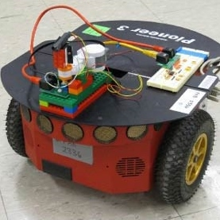

CONNIE LIU
AUTONOMOUS NAVIGATION BOT
Search algorithms and maze navigation
This robot was the final project for MIT's Introduction to Electrical Engineering and Computer Science Class (6.01). It was designed with optimized search algorithms to traverse a maze autonomously. In order to optimize performance, the robot was refined to distinguish noise from actual wall detection. Using a Bayesian update process to update present and past states of the robot and sonar sensors to detect walls, our robot was one of five to complete the maze.
Lessons Learned
Python: The robot was programmed using Python and employed many algorithms learned throughout the class. In order to determine the robot's path, I established a priority queue that accounted for path cost to optimize for the fastest projected path to travel. Various heuristics were tested to optimize the robot's travel time and much of the search algorithm was reliant on how closely this heuristic followed the final path and the reliability of its state estimation.
Tenacity: I ended up spending many late nights in lab testing optimal conditions to make my search algorithms more and more robust. Seemingly minor tweaks in value weights or robot speed made all the difference between a successful or failed attempt at traversing the maze, and an important lesson in perfectionism. This became clear on competition day as many robots failed to make tight turns or mistakenly interpreted noise as a wall and drove themselves into pseudo-dead ends. Creating optimal conditions became almost an obsession, and it paid off as our robot successfully crossed the finish line in record time.